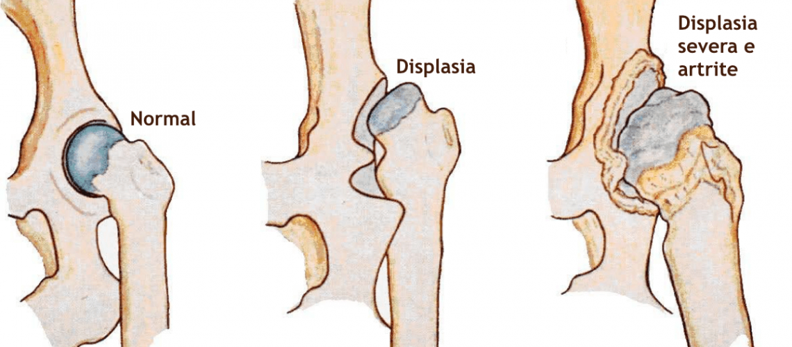
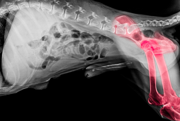
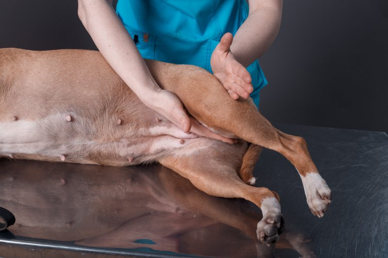
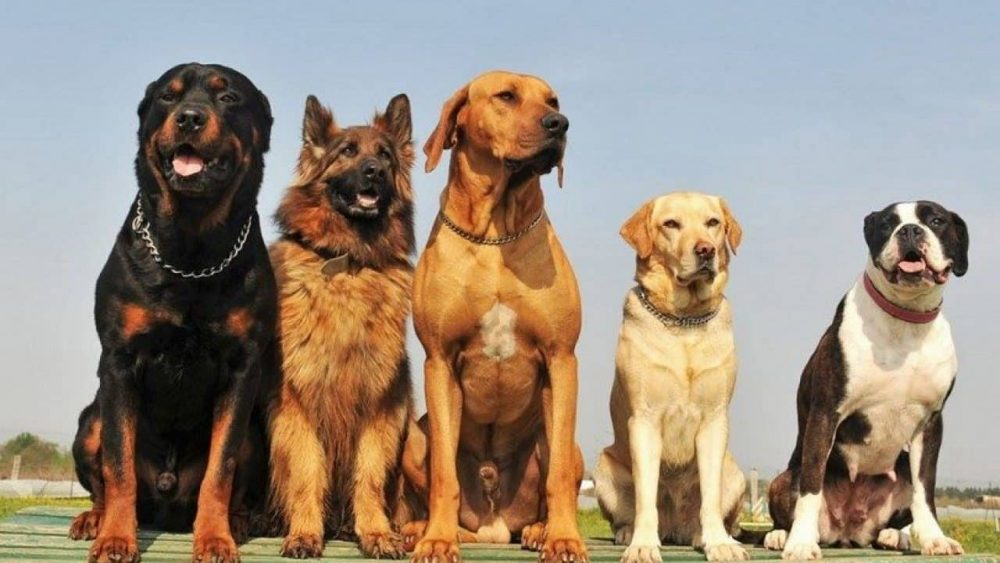
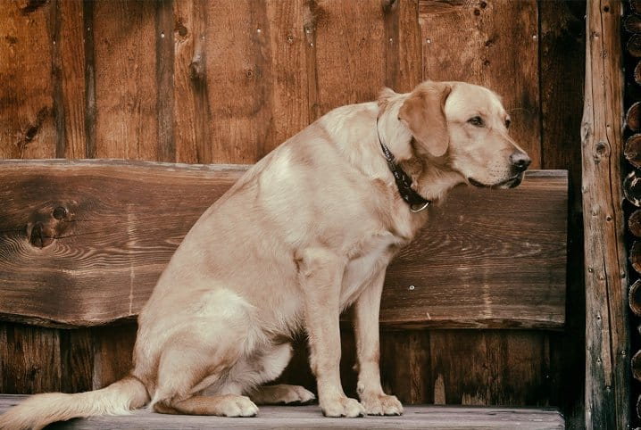
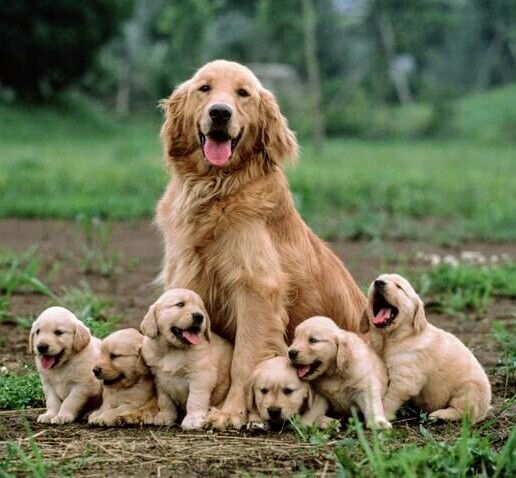
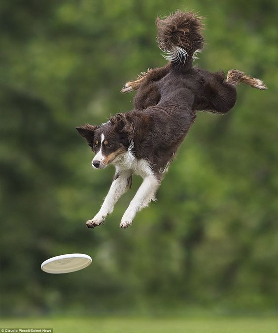
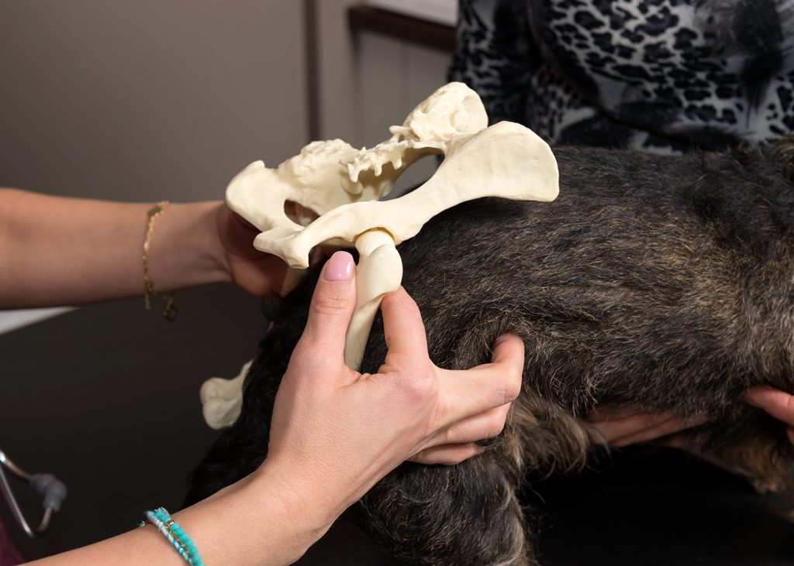
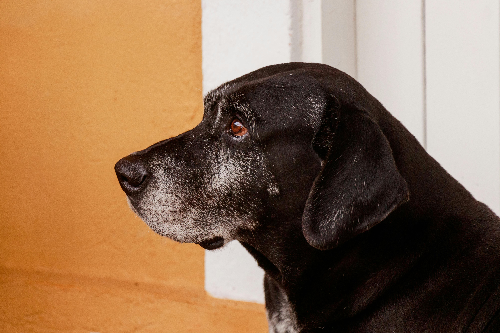

Sobre o nosso projeto...
Criamos esse projeto em formato de site, para que seja uma forma mais rapida e eficaz
sobre nossa ação, onde o intuíto é explicar as fases que nossos doguinhos passam quando
falamos de *Displasia coxofemoral*.
Nosso grupo com base em conhecimentos e experiências optamos por esse formato (Um site)
pela facilidade que temos hoje em dia, onde nossas principais duvidas seriam encontradas
num só lugar. Onde assim como abordamos essa doença, poderiamos associar varias outras numa
epecie de base, fazendo com que vários tutores possam ser infomados de primeira instancia
e saber um pouco mais sobre o processo que seu animal vai passar.

Você sabe o que é Displasia Coxofemoral?
Displasia coxofemoral nada mais é que uma condição ortopédica
que afeta articulações do quadril e tecidos
moles próximos como tendões e ligamentos, ocasionando
o atrito entre a bacia e o fêmur por não terem se
desenvolvido corretamente, levando a dor, limitação
de movimentos e, em casos mais graves
podendo ocorrer a perda de funções.



Principais Alvos

Essa condição pode ocorrer em qualquer porte de cães, porém
é comum apresentar-se em cães de grande porte,
onde acontece um atrito maior nos ligamentos da bacia e os da cabeça do fêmur.
Displasia Coxofemoral não é só vista em cães,
pode ser acontecer facilmente em seres humanos,
felinos e outras espécies que sofram as mesmas condiçôes ortopédicas.
Quais são os sintomas?
Os sintomas apresentam de acordo com a
gravidade da situação, podendo incluir tais como:

-Diminuição da atividades físicas
-Redução da amplitude (limitação) de movimento
-Hesitação ao usar os membros traseiros
-Dificuldade ou relutância em saltar, pular, correr ou subir escadas
-Perda da massa muscular da coxa
-Dores
-Rigidez dos membros
-Sentar-de lado
-Claudicar
-Perda ou alteração de mobilidade
-Arrastar-se para andar
-Estalos ao andar
Quais são as causas?
Alem da predisposição genética,
fatores como sobrepeso, falta ou excesso
de atividade física e lesões também
contribuem para essa condição.
Alem da predisposição genética,
fatores como sobrepeso, falta ou excesso
de atividade física e lesões também
contribuem para essa condição.


Tratamento
O acompanhamento veterinário é indispensável
para identificação da doença e retardar a
progressão dela, junto dele utilizamos ao nosso
favor a dieta equilibrada para perda de peso,
restrição a atividades físicas pesadas,
fisioterapia e até acupuntura.
O acompanhamento veterinário é indispensável
para identificação da doença e retardar a
progressão dela, junto dele utilizamos ao nosso
favor a dieta equilibrada para perda de peso,
restrição a atividades físicas pesadas,
fisioterapia e até acupuntura.
Como previnir?
Cuidados com o ambiente é de extrema
importância, assim reduzimos os movimentos
bruscos, risco de escorregamentos e lesões.
evite pisos com textura lisa, opte por carpetes,
pisos emborrachados e de textura áspera, manter
o piso sempre seco, não estimular corridas,
evitar impactos como escadas, sofás, camas
e sempre manter o checkup regular do seu
cão no veterinário.
